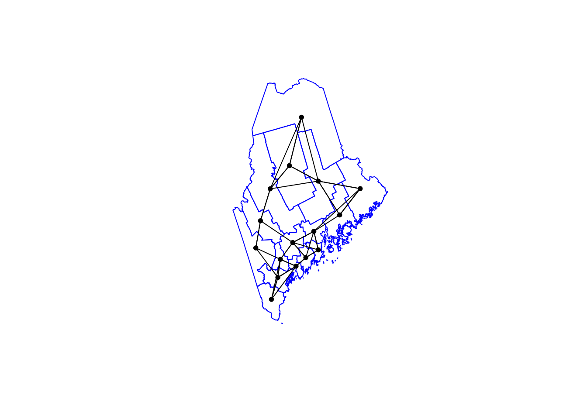
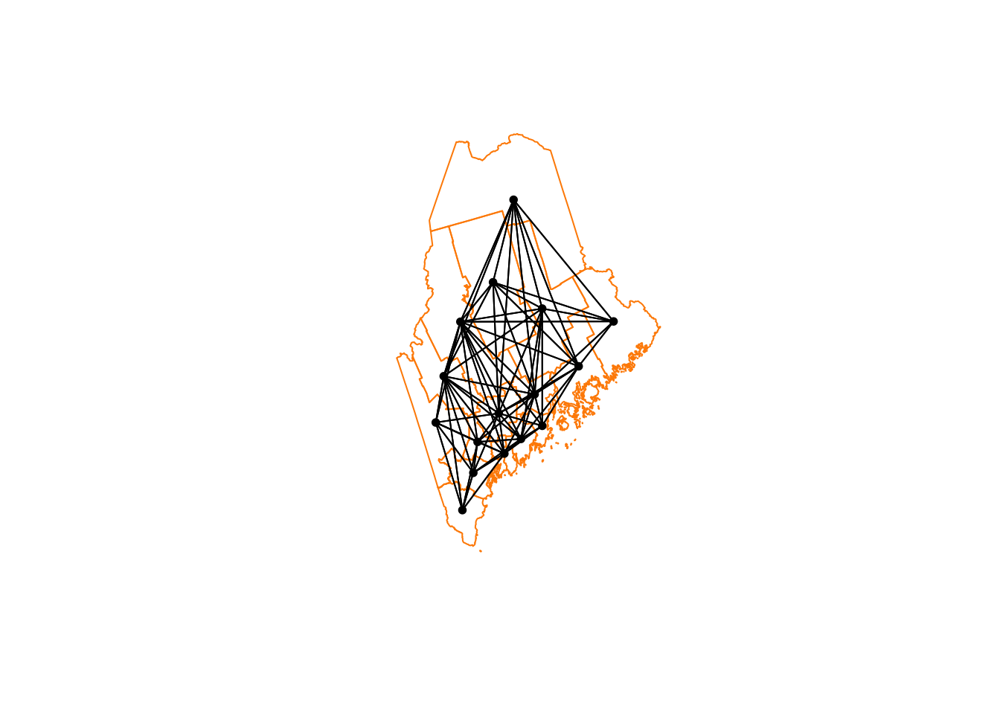

TUTORIAL Autocorrelation & Spatial Weights
Check before you start
Here is how I load the example data for this tutorial which focuses on 2020 median per capita income for the state of Maine.

Map of 2020 median per capita income for Maine counties (USA).
Code to load the example data. IF YOU’RE DOING LAB 5 this was covered in week 1
First make sure all of these libraries are at the top of your lab script in a code chunk, and run the code chunk! If you run the code chunk and it says a package is missing, either click “install” if the little yellow bar appears at the top, or go to the Packages tab, and click Install to go to the package ‘app store’.
library(readxl)
library(tidyverse)
library(dplyr)
library(terra)
library(sf)
library(tmap)
library(ggplot2)
library(ggthemes)
library(viridis)
library(RColorBrewer)
library(plotly)
library(spatstat)
library(sfdep)
library(tidycensus)
library(units)
library(sfdep)
library(spatstat)Then you can load your data from the census and tidy up, before plotting
# Download some data for Maine and NH using get_acs
# THIS WILL NOT WORK IF YOU DID'T RUN YOUR API KEY CODE & RESTART R-STUDIO
ACS_county.sf <- get_acs(geography = "county",
year = 2019,
variables = c(housevalue = "B25075_001", # house value
total_pop = "B05012_001", # total population
total_house = "B25001_001", # no. houses
med.income = "B19013_001"), # median income
state = c("ME"),
survey = "acs5", geometry = TRUE,
output = "wide", show_call = FALSE)
#st_coordinates(ACS_county.sf)
# OPTIONAL. For more advanced work, you probably want to keep the error columns
# If you don't run it, remember all your columns have an E on the end of the name
ACS_county.sf <- ACS_county.sf %>%
select(
GEOID,
NAME,
housevalue = housevalueE,
total_pop = total_popE,
total_house = total_houseE,
med.income = med.incomeE,
geometry
)
#st_coordinates(ACS_county.sf)
# Change the map projection to Albers equal projection,
# then remove empty polygons (lakes etc) and fix any broken geometry
ACS_county.sf <- ACS_county.sf %>%
st_transform(5070) %>%
filter(!st_is_empty(geometry)) %>%
st_make_valid()
# Find the areas in each county & change the units from metres squared to km squared
ACS_county.sf$Area <- st_area(ACS_county.sf)
ACS_county.sf$Area <- as.numeric(set_units(ACS_county.sf$Area,"km^2"))
# OPTIONAL & DEPENDS ON THE VARIABLES YOU DOWNLOAD
# Divide the total population & housing by the area to give the population/housing density
ACS_county.sf$pop_density_km2 <- ACS_county.sf$total_pop / ACS_county.sf$Area
ACS_county.sf$house_density_km2 <- ACS_county.sf$total_house / ACS_county.sf$Area
# OPTIONAL make a quick plot
tm_basemap("CartoDB.Voyager") +
tm_shape(ACS_county.sf) +
tm_polygons(
fill = "med.income",
fill.scale = tm_scale_intervals(values = "brewer.blues", style = "jenks"),
fill_alpha = 0.7,
fill.legend = tm_legend("Maine average income per county (USD)")
) Introduction
In this tutorial, we introduce spatial autocorrelation, a property that describes how values at one location relate to values at nearby locations.
This concept is rooted in Tobler’s First Law of Geography which states:
“The first law of geography: Everything is related to everything else, but near things are more related than distant things.” Waldo R. Tobler [@Tobler1970]
This principle underpins much of spatial analysis. It suggests that spatial data often exhibit non-random patterns, where nearby features tend to have similar attribute values. Spatial autocorrelation provides a formal way to quantify this tendency.

To make the mathematical foundations of autocorrelation more accessible, we shift from the point used in the previous labs to a simpler dataset composed of polygonal areal units (e.g., counties). This allows us to clearly illustrate how spatial relationships are defined, how spatial weights are constructed, and how measures like Moran’s I are computed.
This chapter focuses on:
- Defining spatial autocorrelation and its role in spatial statistics.
- Constructing spatial weights to represent neighborhood relationships.
- Computing and interpreting global and local Moran’s I statistics.
- Using permutation-based hypothesis testing to assess significance.
Introducing Global Moran’s I
While maps can sometimes reveal clusters of similar values, our visual interpretation is often limited, especially when patterns are subtle or complex. Here, it may seem apparent that, when aggregated at the county level, the income distribution appears clustered with high counties surrounded by high counties and low counties surrounded by low counties. But a qualitative description may not be sufficient; we might want to quantify the degree to which similar (or dissimilar) counties are clustered.
To move beyond subjective impressions, we need a quantitative and objective measure of spatial patterning. Specifically, we want to quantify the degree to which similar attribute values are clustered or dispersed across space.
One widely used statistic for this purpose is Moran’s I , a measure of global spatial autocorrelation. It quantifies the overall tendency for features with similar values to be located near one another, based on a defined spatial relationship (e.g., contiguity or distance). In essence, Moran’s I is a correlation coefficient between a variable and its spatially lagged counterpart.
The Moran’s I statistic is a measure of spatial autocorrelation that quantifies the degree to which similar values (like income) cluster together in space. It is computed as the correlation between a variable and its spatially lagged counterpart, based on a defined spatial weights matrix.
Calculating spatial weights/neighbourhood
Computing neighborhood & spatial weights
But before we go about computing this correlation, we need to come up with a way to define a neighbor.
One approach is to define a neighbor as being any contiguous polygon. For example, the northern most county (Aroostook), has four contiguous neighbors while the southern most county (York) has just two contiguous counties. Other neighborhood definitions can include distance bands (e.g. counties within 100 km) and k nearest neighbors (e.g. the 2 closest neighbors). Note that distance bands and k nearest neighbors are usually measured using the polygon’s centroids and not their boundaries.

Maps show the links between each polygon and their respective neighbor(s) based on the neighborhood definition. A contiguous neighbor is defined as one that shares a boundary or a vertex with the polygon of interest. Orange numbers indicate the number of neighbors for each polygon. Note that the top most county has no neighbors when a neighborhood definition of a 100 km distance band is used (i.e. no centroids are within a 100 km search radius)
Once we have chosen a definition of neighborhood, the next step is to identify which polygons are neighbors and to represent that as a spatial weights matrix.
As described in lectures, there are many ways to calculate neighbourhood. Here are a few of them.
Nearest neighbours
In this method, we first get the shapes of the polygons using
st_geometry, then extract the central point using
st_centroid . We then calculate the nearest neighbours
using st_knn, which allows us to choose how many nearest
neighbours you want to count.
# First get the geometry/coords
ACS_county.geometry <- st_geometry(ACS_county.sf)
# Then the central point in each polygon
ACS_county.centroid <- st_centroid(ACS_county.sf)## Warning: st_centroid assumes attributes are constant over geometries# Finally, extract the nearest neigbours
neighbor.nearest3 <- st_knn(ACS_county.centroid, k = 3)
# Type its name to see the summary.
neighbor.nearest3## Neighbour list object:
## Number of regions: 16
## Number of nonzero links: 48
## Percentage nonzero weights: 18.75
## Average number of links: 3
## Non-symmetric neighbours listTo calculate and plot the three nearest neighbours (nearest centroids), we first plot the shapes, followed by the neighbours.
plot(ACS_county.geometry, border='blue')
plot(neighbor.nearest3,
st_coordinates(ACS_county.centroid),
col='black', lwd=1, pch=16, cex=.8, add=TRUE)
In the summary above, you should be able to see that each polygon has an average of 3 links to its neighbours. Makes sense given we’re asking the 3 nearest neighbours!
Queens & Rook’s adjacency
It’s similar to calculate and plot adjacency neighbors, but we
switchout st_knn for st_contiguity.
- QUEENS ADJACENCY → touch at any point (edges or corners)
- ROOKS ADJACENCY → touch by edges only (rook adjacency)
# First get the geometry/coords
ACS_county.geometry <- st_geometry(ACS_county.sf)
# Then the central point in each polygon
ACS_county.centroid <- st_centroid(ACS_county.sf)## Warning: st_centroid assumes attributes are constant over geometries# Finally, extract the Queens neigbours
neighbor.queens <- st_contiguity(ACS_county.geometry, queen=TRUE)
# And plot
plot(ACS_county.geometry, border='darkcyan')
plot(neighbor.queens, st_coordinates(ACS_county.centroid),
col='black', lwd=1, pch=16, cex=.8, add=TRUE)
Or for Rooks:
# First get the geometry/coords
ACS_county.geometry <- st_geometry(ACS_county.sf)
# Then the central point in each polygon
ACS_county.centroid <- st_centroid(ACS_county.sf)## Warning: st_centroid assumes attributes are constant over geometries# Finally, extract the Rook'sneigbours
neighbor.rooks <- st_contiguity(ACS_county.geometry, queen=FALSE)
# And plot
plot(ACS_county.geometry, border='darkcyan')
plot(neighbor.rooks, st_coordinates(ACS_county.centroid),
col='black', lwd=1, pch=16, cex=.8, add=TRUE)
Second order weights
To calculate and plot second order weights, we use the cumulative
st_nb_lag_cumul function.
# Second order queens
neighbor.queens.2nd <- st_nb_lag_cumul(neighbor.queens, 2)
weights.queens.2nd <- st_weights(neighbor.queens.2nd)
neighbor.queens.2nd## Neighbour list object:
## Number of regions: 16
## Number of nonzero links: 146
## Percentage nonzero weights: 57.03125
## Average number of links: 9.125# and plot
plot(ACS_county.geometry, border='darkorange')
plot(neighbor.queens.2nd, st_coordinates(ACS_county.centroid),
col='black', lwd=1, pch=16, cex=.8, add=TRUE)
Or
# Third order Rooms
neighbor.rooks.3nd <- st_nb_lag_cumul(neighbor.rooks, 3)
weights.rooks.3rd <- st_weights(neighbor.rooks.3nd)
neighbor.rooks.3nd## Neighbour list object:
## Number of regions: 16
## Number of nonzero links: 206
## Percentage nonzero weights: 80.46875
## Average number of links: 12.875# and plot
plot(ACS_county.geometry, border='darkorange')
plot(neighbor.queens.2nd, st_coordinates(ACS_county.centroid),
col='black', lwd=1, pch=16, cex=.8, add=TRUE)
We’re now up to 12 neighbours on average per polygon. So every polygon is now connected with MANY others, which I’m guessing will mean very smooth resulting field (e.g. everything is being averaged out).
Extracting weights
To find the weights and neighbours for a specific polygon, you have two choices.
First we can look up the weights in the output we already have. They are saved as a new type of R data called a list. First, we get the names of the counties (note it doesn’t have to be name, you can look up any column).
Here is our data
# Make a copy so we don't mess up the original
NeighboursTest.sf <- ACS_county.sf
# Search for York in the main file
index_York <- grep("York",ACS_county.sf$NAME)
# and get the neighbours ONLY of our York polygon
neighbors_York <- neighbor.rooks.3nd[[index_York]]
weights_York <- weights.rooks.3rd[[index_York]]
# Make a blank column and fill with the weights
NeighboursTest.sf$WeightsYork <- 0
NeighboursTest.sf$WeightsYork[neighbors_York] <- weights_York
# YOU MIGHT NOT WANT TO DO THESE, OPTIONAL OUTPUTS
# Write out a message
message("Requested neighbours")## Requested neighbours# and make a quick plot
qtm(NeighboursTest.sf,"WeightsYork")+
qtm(NeighboursTest.sf[index_York,],fill="red")
More examples?
MANY more examples here: https://sfdep.josiahparry.com/. Josiah now runs the spatial stats section of ESRI. He and I are known to have long conversations about spatial weights matrices…